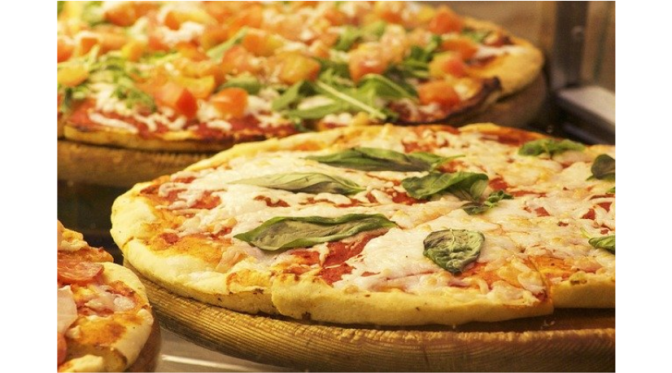
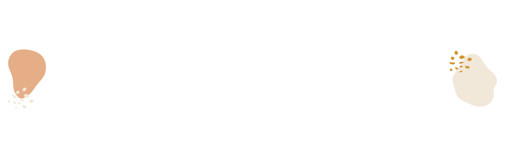
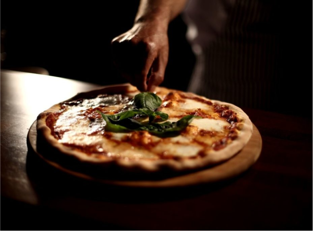

The innovation that led to flatbread pizza was the use of tomato as a topping. For some time after the tomato was brought to Europe from the Americas in the 16th century, it was believed by many Europeans to be poisonous, like some other fruits of the Solanaceae (nightshade) family are. However, by the late 18th century, it was common for the poor of the area around Naples to add tomato to their yeast-based flatbread, and so the pizza began.

The word pizza was first documented in A.D. 997 in Gaeta and successively in different parts of Central and Southern Italy. Pizza was mainly eaten in Italy and by emigrants from there. This changed after World War II when Allied troops stationed in Italy came to enjoy pizza along with other Italian foods.
HISTORY

Where did it come from?
The origin of PIZZA